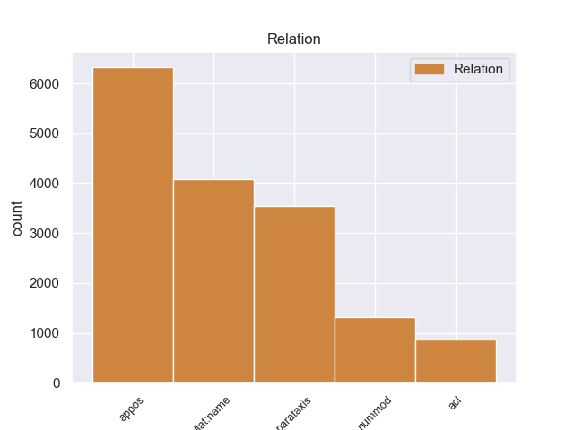
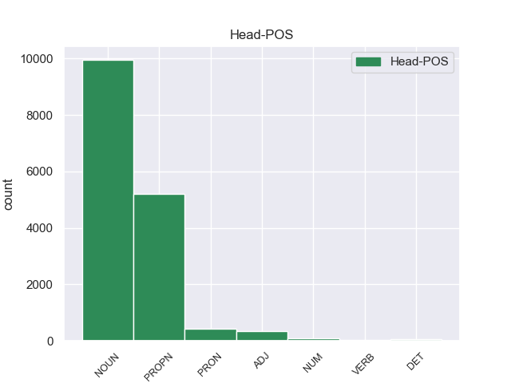
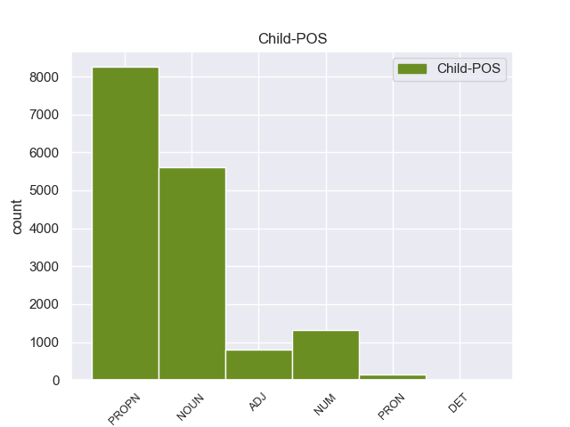

Distribution of features within this leaf



Agreement Rules sorted by frequency.
- When the dependent token is the flat-name(flat:name) of the head token, and the dependent token is PROPN.
1 На _ _ _ _ 0 _ _ _
2 тех _ _ _ _ 0 _ _ _
3 же _ _ _ _ 0 _ _ _
4 состязаниях _ _ _ _ 0 _ _ _
5 он _ _ _ _ 0 _ _ _
6 опередил _ _ _ _ 0 _ _ _
7 в _ _ _ _ 0 _ _ _
8 беге _ _ _ _ 0 _ _ _
9 всех _ _ _ _ 0 _ _ _
10 , _ _ _ _ 0 _ _ _
11 кроме _ _ _ _ 0 _ _ _
12 длинноногого _ _ _ _ 0 _ _ _
13 учителя _ _ _ _ 0 _ _ _
14 математики _ _ _ _ 0 _ _ _
15 Михаила Михаил PROPN _ Animacy=Anim|Case=Gen|Gender=Masc|Number=Sing 0 _ _ _
16 Александровича Александрович PROPN _ Animacy=Anim|Case=Gen|Gender=Masc|Number=Sing 15 flat:name 15:flat:name SpaceAfter=No
17 . _ _ _ _ 0 _ _ _
1 И _ _ _ _ 0 _ _ _
2 была _ _ _ _ 0 _ _ _
3 смуглая _ _ _ _ 0 _ _ _
4 девочка девочка NOUN _ Animacy=Anim|Case=Nom|Gender=Fem|Number=Sing 0 _ _ _
5 с _ _ _ _ 0 _ _ _
6 безжалостно _ _ _ _ 0 _ _ _
7 исцарапанными _ _ _ _ 0 _ _ _
8 ногами _ _ _ _ 0 _ _ _
9 , _ _ _ _ 0 _ _ _
10 сбитыми _ _ _ _ 0 _ _ _
11 коленями _ _ _ _ 0 _ _ _
12 , _ _ _ _ 0 _ _ _
13 острыми _ _ _ _ 0 _ _ _
14 лопатками _ _ _ _ 0 _ _ _
15 задиры _ _ _ _ 0 _ _ _
16 - _ _ _ _ 0 _ _ _
17 вылитая _ _ _ _ 0 _ _ _
18 Галя Галя PROPN _ Animacy=Anim|Case=Nom|Gender=Fem|Number=Sing 4 appos 4:appos SpaceAfter=No
19 , _ _ _ _ 0 _ _ _
20 и _ _ _ _ 0 _ _ _
21 воспитательница _ _ _ _ 0 _ _ _
22 , _ _ _ _ 0 _ _ _
23 учившая _ _ _ _ 0 _ _ _
24 детей _ _ _ _ 0 _ _ _
25 какой-то _ _ _ _ 0 _ _ _
26 игре _ _ _ _ 0 _ _ _
27 , _ _ _ _ 0 _ _ _
28 на _ _ _ _ 0 _ _ _
29 мгновение _ _ _ _ 0 _ _ _
30 повернула _ _ _ _ 0 _ _ _
31 ко _ _ _ _ 0 _ _ _
32 мне _ _ _ _ 0 _ _ _
33 светлую _ _ _ _ 0 _ _ _
34 лунность _ _ _ _ 0 _ _ _
35 круглого _ _ _ _ 0 _ _ _
36 Муриного _ _ _ _ 0 _ _ _
37 лица _ _ _ _ 0 _ _ _
38 . _ _ _ _ 0 _ _ _
1 Тот _ _ _ _ 0 _ _ _
2 день _ _ _ _ 0 _ _ _
3 начался _ _ _ _ 0 _ _ _
4 с _ _ _ _ 0 _ _ _
5 маленького _ _ _ _ 0 _ _ _
6 чуда _ _ _ _ 0 _ _ _
7 : _ _ _ _ 0 _ _ _
8 оказалось _ _ _ _ 0 _ _ _
9 , _ _ _ _ 0 _ _ _
10 низинный _ _ _ _ 0 _ _ _
11 , _ _ _ _ 0 _ _ _
12 сыроватый _ _ _ _ 0 _ _ _
13 ольшаник _ _ _ _ 0 _ _ _
14 , _ _ _ _ 0 _ _ _
15 примыкающий _ _ _ _ 0 _ _ _
16 с _ _ _ _ 0 _ _ _
17 севера _ _ _ _ 0 _ _ _
18 к _ _ _ _ 0 _ _ _
19 дачной _ _ _ _ 0 _ _ _
20 ограде _ _ _ _ 0 _ _ _
21 , _ _ _ _ 0 _ _ _
22 сказочно _ _ _ _ 0 _ _ _
23 богат _ _ _ _ 0 _ _ _
24 грибами гриб NOUN _ Animacy=Inan|Case=Ins|Gender=Masc|Number=Plur 0 _ _ _
25 свинушками свинушка NOUN _ Animacy=Inan|Case=Ins|Gender=Fem|Number=Plur 24 appos 24:appos SpaceAfter=No
26 . _ _ _ _ 0 _ _ _
1 Верно _ _ _ _ 0 _ _ _
2 , _ _ _ _ 0 _ _ _
3 по _ _ _ _ 0 _ _ _
4 той _ _ _ _ 0 _ _ _
5 же _ _ _ _ 0 _ _ _
6 причине _ _ _ _ 0 _ _ _
7 звучали _ _ _ _ 0 _ _ _
8 тут _ _ _ _ 0 _ _ _
9 так _ _ _ _ 0 _ _ _
10 ясно _ _ _ _ 0 _ _ _
11 , _ _ _ _ 0 _ _ _
12 открыто _ _ _ _ 0 _ _ _
13 непуганые _ _ _ _ 0 _ _ _
14 голоса _ _ _ _ 0 _ _ _
15 ушедших _ _ _ _ 0 _ _ _
16 ; _ _ _ _ 0 _ _ _
17 я _ _ _ _ 0 _ _ _
18 слышал _ _ _ _ 0 _ _ _
19 голос _ _ _ _ 0 _ _ _
20 деда _ _ _ _ 0 _ _ _
21 и _ _ _ _ 0 _ _ _
22 голос _ _ _ _ 0 _ _ _
23 своего _ _ _ _ 0 _ _ _
24 отца _ _ _ _ 0 _ _ _
25 , _ _ _ _ 0 _ _ _
26 и _ _ _ _ 0 _ _ _
27 слепые _ _ _ _ 0 _ _ _
28 дети _ _ _ _ 0 _ _ _
29 закричали _ _ _ _ 0 _ _ _
30 жалостно _ _ _ _ 0 _ _ _
31 : _ _ _ _ 0 _ _ _
32 " _ _ _ _ 0 _ _ _
When the dependent token is the numeric modifier(nummod) of the head token, and the dependent token is NUM.
1 Мы _ _ _ _ 0 _ _ _
2 живем _ _ _ _ 0 _ _ _
3 менее _ _ _ _ 0 _ _ _
4 чем _ _ _ _ 0 _ _ _
5 в _ _ _ _ 0 _ _ _
6 сорока сорок NUM _ Case=Loc 7 nummod 7:nummod _
7 километрах километр NOUN _ Animacy=Inan|Case=Loc|Gender=Masc|Number=Plur 0 _ _ _
8 от _ _ _ _ 0 _ _ _
9 Москвы _ _ _ _ 0 _ _ _
10 , _ _ _ _ 0 _ _ _
11 но _ _ _ _ 0 _ _ _
12 поблизости _ _ _ _ 0 _ _ _
13 нет _ _ _ _ 0 _ _ _
14 железной _ _ _ _ 0 _ _ _
15 дороги _ _ _ _ 0 _ _ _
16 , _ _ _ _ 0 _ _ _
17 да _ _ _ _ 0 _ _ _
18 и _ _ _ _ 0 _ _ _
19 шоссе _ _ _ _ 0 _ _ _
20 от _ _ _ _ 0 _ _ _
21 наших _ _ _ _ 0 _ _ _
22 мест _ _ _ _ 0 _ _ _
23 далековато _ _ _ _ 0 _ _ _
24 , _ _ _ _ 0 _ _ _
25 потому _ _ _ _ 0 _ _ _
26 и _ _ _ _ 0 _ _ _
27 лес _ _ _ _ 0 _ _ _
28 у _ _ _ _ 0 _ _ _
29 нас _ _ _ _ 0 _ _ _
30 хороший _ _ _ _ 0 _ _ _
31 , _ _ _ _ 0 _ _ _
32 чистый _ _ _ _ 0 _ _ _
33 , _ _ _ _ 0 _ _ _
34 не _ _ _ _ 0 _ _ _
35 израненный _ _ _ _ 0 _ _ _
36 любителями _ _ _ _ 0 _ _ _
37 пиршеств _ _ _ _ 0 _ _ _
38 на _ _ _ _ 0 _ _ _
39 лоне _ _ _ _ 0 _ _ _
40 природы _ _ _ _ 0 _ _ _
41 . _ _ _ _ 0 _ _ _
When the dependent token is the adjectival clause(acl) of the head token, and the dependent token is ADJ.
1 Радостно _ _ _ _ 0 _ _ _
2 - _ _ _ _ 0 _ _ _
3 тревожное _ _ _ _ 0 _ _ _
4 чувство _ _ _ _ 0 _ _ _
5 владело _ _ _ _ 0 _ _ _
6 мною _ _ _ _ 0 _ _ _
7 : _ _ _ _ 0 _ _ _
8 я _ _ _ _ 0 _ _ _
9 знал _ _ _ _ 0 _ _ _
10 , _ _ _ _ 0 _ _ _
11 что _ _ _ _ 0 _ _ _
12 ушел _ _ _ _ 0 _ _ _
13 не _ _ _ _ 0 _ _ _
14 так _ _ _ _ 0 _ _ _
15 уж _ _ _ _ 0 _ _ _
16 далеко _ _ _ _ 0 _ _ _
17 и _ _ _ _ 0 _ _ _
18 все _ _ _ _ 0 _ _ _
19 же _ _ _ _ 0 _ _ _
20 куда _ _ _ _ 0 _ _ _
21 сильнее _ _ _ _ 0 _ _ _
22 оторвался _ _ _ _ 0 _ _ _
23 от _ _ _ _ 0 _ _ _
24 дома _ _ _ _ 0 _ _ _
25 , _ _ _ _ 0 _ _ _
26 чем _ _ _ _ 0 _ _ _
27 если _ _ _ _ 0 _ _ _
28 бы _ _ _ _ 0 _ _ _
29 забрел _ _ _ _ 0 _ _ _
30 в _ _ _ _ 0 _ _ _
31 последнюю _ _ _ _ 0 _ _ _
32 даль _ _ _ _ 0 _ _ _
33 по _ _ _ _ 0 _ _ _
34 знакомой знакомый ADJ _ Case=Dat|Degree=Pos|Gender=Fem|Number=Sing 37 acl 37:acl SpaceAfter=No
35 , _ _ _ _ 0 _ _ _
36 проторенной _ _ _ _ 0 _ _ _
37 тропке тропка NOUN _ Animacy=Inan|Case=Dat|Gender=Fem|Number=Sing 0 _ _ _
38 . _ _ _ _ 0 _ _ _
When the dependent token is the adjectival clause(acl) of the head token, and the dependent token is NOUN.
1 Был _ _ _ _ 0 _ _ _
2 ли _ _ _ _ 0 _ _ _
3 в _ _ _ _ 0 _ _ _
4 яви _ _ _ _ 0 _ _ _
5 или _ _ _ _ 0 _ _ _
6 только _ _ _ _ 0 _ _ _
7 приснился _ _ _ _ 0 _ _ _
8 мне _ _ _ _ 0 _ _ _
9 этот _ _ _ _ 0 _ _ _
10 странный _ _ _ _ 0 _ _ _
11 мальчик мальчик NOUN _ Animacy=Anim|Case=Nom|Gender=Masc|Number=Sing 0 _ _ _
12 , _ _ _ _ 0 _ _ _
13 овеянный _ _ _ _ 0 _ _ _
14 нежностью _ _ _ _ 0 _ _ _
15 и _ _ _ _ 0 _ _ _
16 печалью _ _ _ _ 0 _ _ _
17 нездешности _ _ _ _ 0 _ _ _
18 , _ _ _ _ 0 _ _ _
19 как _ _ _ _ 0 _ _ _
20 Маленький _ _ _ _ 0 _ _ _
21 принц принц NOUN _ Animacy=Anim|Case=Nom|Gender=Masc|Number=Sing 11 acl 11:acl _
22 Антуана _ _ _ _ 0 _ _ _
23 де _ _ _ _ 0 _ _ _
24 Сент-Экзюпери _ _ _ _ 0 _ _ _
25 . _ _ _ _ 0 _ _ _
When the dependent token is the parataxis(parataxis) of the head token, and the dependent token is PROPN.
1 Мое _ _ _ _ 0 _ _ _
2 сердце _ _ _ _ 0 _ _ _
3 , _ _ _ _ 0 _ _ _
4 моя _ _ _ _ 0 _ _ _
5 боль _ _ _ _ 0 _ _ _
6 неизменно _ _ _ _ 0 _ _ _
7 принадлежали _ _ _ _ 0 _ _ _
8 второму второй ADJ _ Case=Dat|Degree=Pos|Gender=Masc|Number=Sing 0 _ _ _
9 : _ _ _ _ 0 _ _ _
10 не _ _ _ _ 0 _ _ _
11 Пушкину Пушкин PROPN _ Animacy=Anim|Case=Dat|Gender=Masc|Number=Sing 8 parataxis 8:parataxis SpaceAfter=No
12 , _ _ _ _ 0 _ _ _
13 а _ _ _ _ 0 _ _ _
14 Лермонтову _ _ _ _ 0 _ _ _
15 , _ _ _ _ 0 _ _ _
16 не _ _ _ _ 0 _ _ _
17 Толстому _ _ _ _ 0 _ _ _
18 , _ _ _ _ 0 _ _ _
19 а _ _ _ _ 0 _ _ _
20 Достоевскому _ _ _ _ 0 _ _ _
21 , _ _ _ _ 0 _ _ _
22 не _ _ _ _ 0 _ _ _
23 Алехину _ _ _ _ 0 _ _ _
24 , _ _ _ _ 0 _ _ _
25 а _ _ _ _ 0 _ _ _
26 Капабланке _ _ _ _ 0 _ _ _
27 , _ _ _ _ 0 _ _ _
28 не _ _ _ _ 0 _ _ _
29 Качалову _ _ _ _ 0 _ _ _
30 , _ _ _ _ 0 _ _ _
31 а _ _ _ _ 0 _ _ _
32 Леонидову _ _ _ _ 0 _ _ _
33 , _ _ _ _ 0 _ _ _
34 не _ _ _ _ 0 _ _ _
35 Козловскому _ _ _ _ 0 _ _ _
36 , _ _ _ _ 0 _ _ _
37 а _ _ _ _ 0 _ _ _
38 Лемешеву _ _ _ _ 0 _ _ _
39 . _ _ _ _ 0 _ _ _
When the dependent token is the parataxis(parataxis) of the head token, and the dependent token is ADJ.
1 Она _ _ _ _ 0 _ _ _
2 была _ _ _ _ 0 _ _ _
3 доверчивой _ _ _ _ 0 _ _ _
4 и _ _ _ _ 0 _ _ _
5 доброй _ _ _ _ 0 _ _ _
6 птицей _ _ _ _ 0 _ _ _
7 , _ _ _ _ 0 _ _ _
8 в _ _ _ _ 0 _ _ _
9 ней _ _ _ _ 0 _ _ _
10 чувствовался _ _ _ _ 0 _ _ _
11 прекрасный _ _ _ _ 0 _ _ _
12 характер характер NOUN _ Animacy=Inan|Case=Nom|Gender=Masc|Number=Sing 0 _ _ _
13 : _ _ _ _ 0 _ _ _
14 широкий широкий ADJ _ Case=Nom|Degree=Pos|Gender=Masc|Number=Sing 12 parataxis 12:parataxis SpaceAfter=No
15 , _ _ _ _ 0 _ _ _
16 беспечный _ _ _ _ 0 _ _ _
17 , _ _ _ _ 0 _ _ _
18 дерзкий _ _ _ _ 0 _ _ _
19 . _ _ _ _ 0 _ _ _
When the dependent token is the appositional modifier(appos) of the head token, and the dependent token is ADJ.
1 Святой _ _ _ _ 0 _ _ _
2 равноапостольный _ _ _ _ 0 _ _ _
3 князь _ _ _ _ 0 _ _ _
4 Владимир Владимир PROPN _ Animacy=Anim|Case=Nom|Gender=Masc|Number=Sing 0 _ _ _
5 Великий великий ADJ _ Case=Nom|Degree=Pos|Gender=Masc|Number=Sing 4 appos 4:appos _
6 назначил _ _ _ _ 0 _ _ _
7 князем _ _ _ _ 0 _ _ _
8 на _ _ _ _ 0 _ _ _
9 Волынь _ _ _ _ 0 _ _ _
10 своего _ _ _ _ 0 _ _ _
11 сына _ _ _ _ 0 _ _ _
12 Всеволода _ _ _ _ 0 _ _ _
13 , _ _ _ _ 0 _ _ _
14 которому _ _ _ _ 0 _ _ _
15 подчинялась _ _ _ _ 0 _ _ _
16 не _ _ _ _ 0 _ _ _
17 только _ _ _ _ 0 _ _ _
18 Волынь _ _ _ _ 0 _ _ _
19 , _ _ _ _ 0 _ _ _
20 но _ _ _ _ 0 _ _ _
21 и _ _ _ _ 0 _ _ _
22 все _ _ _ _ 0 _ _ _
23 червенские _ _ _ _ 0 _ _ _
24 города _ _ _ _ 0 _ _ _
25 до _ _ _ _ 0 _ _ _
26 предгорий _ _ _ _ 0 _ _ _
27 Карпат _ _ _ _ 0 _ _ _
28 . _ _ _ _ 0 _ _ _
When the dependent token is the parataxis(parataxis) of the head token, and the dependent token is PRON.
1 По _ _ _ _ 0 _ _ _
2 главной _ _ _ _ 0 _ _ _
3 улице _ _ _ _ 0 _ _ _
4 города _ _ _ _ 0 _ _ _
5 , _ _ _ _ 0 _ _ _
6 куда _ _ _ _ 0 _ _ _
7 выходила _ _ _ _ 0 _ _ _
8 наша _ _ _ _ 0 _ _ _
9 Малая _ _ _ _ 0 _ _ _
10 Блиновская _ _ _ _ 0 _ _ _
11 , _ _ _ _ 0 _ _ _
12 гуляли _ _ _ _ 0 _ _ _
13 среди _ _ _ _ 0 _ _ _
14 городской _ _ _ _ 0 _ _ _
15 толпы _ _ _ _ 0 _ _ _
16 высокие _ _ _ _ 0 _ _ _
17 , _ _ _ _ 0 _ _ _
18 стройные _ _ _ _ 0 _ _ _
19 , _ _ _ _ 0 _ _ _
20 светловолосые _ _ _ _ 0 _ _ _
21 мужчины _ _ _ _ 0 _ _ _
22 и _ _ _ _ 0 _ _ _
23 под _ _ _ _ 0 _ _ _
24 стать _ _ _ _ 0 _ _ _
25 им _ _ _ _ 0 _ _ _
26 высокие _ _ _ _ 0 _ _ _
27 , _ _ _ _ 0 _ _ _
28 гибкие _ _ _ _ 0 _ _ _
29 женщины женщина NOUN _ Animacy=Anim|Case=Nom|Gender=Fem|Number=Plur 0 _ _ _
30 , _ _ _ _ 0 _ _ _
31 - _ _ _ _ 0 _ _ _
32 все все PRON _ Animacy=Inan|Case=Nom|Gender=Neut|Number=Sing 29 parataxis 29:parataxis _
33 в _ _ _ _ 0 _ _ _
34 легкой _ _ _ _ 0 _ _ _
35 серой _ _ _ _ 0 _ _ _
36 или _ _ _ _ 0 _ _ _
37 кремовой _ _ _ _ 0 _ _ _
38 фланели _ _ _ _ 0 _ _ _
39 , _ _ _ _ 0 _ _ _
40 в _ _ _ _ 0 _ _ _
41 красивых _ _ _ _ 0 _ _ _
42 мягких _ _ _ _ 0 _ _ _
43 туфлях _ _ _ _ 0 _ _ _
44 на _ _ _ _ 0 _ _ _
45 толстой _ _ _ _ 0 _ _ _
46 каучуковой _ _ _ _ 0 _ _ _
47 подошве _ _ _ _ 0 _ _ _
48 . _ _ _ _ 0 _ _ _
When the dependent token is the appositional modifier(appos) of the head token, and the dependent token is PRON.
1 А _ _ _ _ 0 _ _ _
2 ответ ответ NOUN _ Animacy=Inan|Case=Nom|Gender=Masc|Number=Sing 0 _ _ _
3 - _ _ _ _ 0 _ _ _
4 вот _ _ _ _ 0 _ _ _
5 он он PRON _ Case=Nom|Gender=Masc|Number=Sing|Person=3 2 appos 2:appos SpaceAfter=No
6 : _ _ _ _ 0 _ _ _
7 все _ _ _ _ 0 _ _ _
8 прежние _ _ _ _ 0 _ _ _
9 попытки _ _ _ _ 0 _ _ _
10 реформ _ _ _ _ 0 _ _ _
11 не _ _ _ _ 0 _ _ _
12 принесли _ _ _ _ 0 _ _ _
13 должного _ _ _ _ 0 _ _ _
14 результата _ _ _ _ 0 _ _ _
15 , _ _ _ _ 0 _ _ _
16 потому _ _ _ _ 0 _ _ _
17 что _ _ _ _ 0 _ _ _
18 не _ _ _ _ 0 _ _ _
19 опирались _ _ _ _ 0 _ _ _
20 на _ _ _ _ 0 _ _ _
21 широкое _ _ _ _ 0 _ _ _
22 развертывание _ _ _ _ 0 _ _ _
23 процессов _ _ _ _ 0 _ _ _
24 демократизации _ _ _ _ 0 _ _ _
25 . _ _ _ _ 0 _ _ _
When the dependent token is the adjectival clause(acl) of the head token, and the dependent token is PROPN.
1 Она она PRON _ Case=Nom|Gender=Fem|Number=Sing|Person=3 0 _ _ _
2 тепла _ _ _ _ 0 _ _ _
3 , _ _ _ _ 0 _ _ _
4 как _ _ _ _ 0 _ _ _
5 Ташкент Ташкент PROPN _ Animacy=Inan|Case=Nom|Gender=Masc|Number=Sing 1 acl 1:acl SpaceAfter=No
6 . _ _ _ _ 0 _ _ _
When the dependent token is the parataxis(parataxis) of the head token, and the dependent token is DET.
1 Действует _ _ _ _ 0 _ _ _
2 принцип принцип NOUN _ Animacy=Inan|Case=Nom|Gender=Masc|Number=Sing 0 _ _ _
3 : _ _ _ _ 0 _ _ _
4 " _ _ _ _ 0 _ _ _
5 свой свой DET _ Case=Nom|Gender=Masc|Number=Sing 2 parataxis 2:parataxis _
6 - _ _ _ _ 0 _ _ _
7 чужой _ _ _ _ 0 _ _ _
8 " _ _ _ _ 0 _ _ _
9 , _ _ _ _ 0 _ _ _
10 ведь _ _ _ _ 0 _ _ _
11 яркий _ _ _ _ 0 _ _ _
12 , _ _ _ _ 0 _ _ _
13 талантливый _ _ _ _ 0 _ _ _
14 человек _ _ _ _ 0 _ _ _
15 может _ _ _ _ 0 _ _ _
16 сломать _ _ _ _ 0 _ _ _
17 сложившийся _ _ _ _ 0 _ _ _
18 порядок _ _ _ _ 0 _ _ _
19 вещей _ _ _ _ 0 _ _ _
20 , _ _ _ _ 0 _ _ _
21 потому _ _ _ _ 0 _ _ _
22 - _ _ _ _ 0 _ _ _
23 то _ _ _ _ 0 _ _ _
24 " _ _ _ _ 0 _ _ _
25 чужаки _ _ _ _ 0 _ _ _
26 " _ _ _ _ 0 _ _ _
27 и _ _ _ _ 0 _ _ _
28 не _ _ _ _ 0 _ _ _
29 проходят _ _ _ _ 0 _ _ _
30 . _ _ _ _ 0 _ _ _
When the dependent token is the flat-name(flat:name) of the head token, and the dependent token is PRON.
1 Походила _ _ _ _ 0 _ _ _
2 она _ _ _ _ 0 _ _ _
3 , _ _ _ _ 0 _ _ _
4 другая _ _ _ _ 0 _ _ _
5 будет _ _ _ _ 0 _ _ _
6 , _ _ _ _ 0 _ _ _
7 третья _ _ _ _ 0 _ _ _
8 , _ _ _ _ 0 _ _ _
9 снова _ _ _ _ 0 _ _ _
10 очередь _ _ _ _ 0 _ _ _
11 доброй _ _ _ _ 0 _ _ _
12 Ивановны _ _ _ _ 0 _ _ _
13 подойдет _ _ _ _ 0 _ _ _
14 , _ _ _ _ 0 _ _ _
15 и _ _ _ _ 0 _ _ _
16 она _ _ _ _ 0 _ _ _
17 скажет _ _ _ _ 0 _ _ _
18 мужу _ _ _ _ 0 _ _ _
19 : _ _ _ _ 0 _ _ _
20 " _ _ _ _ 0 _ _ _
21 Ваньша Ваньша PROPN _ Animacy=Anim|Case=Nom|Gender=Masc|Number=Sing 0 _ _ _
22 ты ты PRON _ Case=Nom|Number=Sing|Person=2 21 flat:name 21:flat:name SpaceAfter=No
23 , _ _ _ _ 0 _ _ _
24 Ваньша _ _ _ _ 0 _ _ _
25 , _ _ _ _ 0 _ _ _
26 давай _ _ _ _ 0 _ _ _
27 Ананьевну _ _ _ _ 0 _ _ _
28 возьмем _ _ _ _ 0 _ _ _
29 , _ _ _ _ 0 _ _ _
30 пошто _ _ _ _ 0 _ _ _
31 она _ _ _ _ 0 _ _ _
32 одна _ _ _ _ 0 _ _ _
33 мыкается _ _ _ _ 0 _ _ _
34 - _ _ _ _ 0 _ _ _
35 то _ _ _ _ 0 _ _ _
36 ? _ _ _ _ 0 _ _ _
37 " _ _ _ _ 0 _ _ _
When the dependent token is the adjectival clause(acl) of the head token, and the dependent token is NUM.
1 Михаил _ _ _ _ 0 _ _ _
2 Касьянов _ _ _ _ 0 _ _ _
3 , _ _ _ _ 0 _ _ _
4 напомнив _ _ _ _ 0 _ _ _
5 , _ _ _ _ 0 _ _ _
6 что _ _ _ _ 0 _ _ _
7 президент _ _ _ _ 0 _ _ _
8 России _ _ _ _ 0 _ _ _
9 в _ _ _ _ 0 _ _ _
10 послании _ _ _ _ 0 _ _ _
11 Федеральному _ _ _ _ 0 _ _ _
12 собранию _ _ _ _ 0 _ _ _
13 определил _ _ _ _ 0 _ _ _
14 предстоящее _ _ _ _ 0 _ _ _
15 мероприятие мероприятие NOUN _ Animacy=Inan|Case=Acc|Gender=Neut|Number=Sing 0 _ _ _
16 как _ _ _ _ 0 _ _ _
17 " _ _ _ _ 0 _ _ _
18 одну один NUM _ Case=Acc|Gender=Fem 15 acl 15:acl _
19 из _ _ _ _ 0 _ _ _
20 важнейших _ _ _ _ 0 _ _ _
21 задач _ _ _ _ 0 _ _ _
22 текущего _ _ _ _ 0 _ _ _
23 года _ _ _ _ 0 _ _ _
24 , _ _ _ _ 0 _ _ _
25 обратился _ _ _ _ 0 _ _ _
26 к _ _ _ _ 0 _ _ _
27 региональным _ _ _ _ 0 _ _ _
28 правительствам _ _ _ _ 0 _ _ _
29 с _ _ _ _ 0 _ _ _
30 призывом _ _ _ _ 0 _ _ _
31 еще _ _ _ _ 0 _ _ _
32 раз _ _ _ _ 0 _ _ _
33 проверить _ _ _ _ 0 _ _ _
34 готовность _ _ _ _ 0 _ _ _
35 к _ _ _ _ 0 _ _ _
36 началу _ _ _ _ 0 _ _ _
37 переписи _ _ _ _ 0 _ _ _
38 и _ _ _ _ 0 _ _ _
39 принять _ _ _ _ 0 _ _ _
40 все _ _ _ _ 0 _ _ _
41 необходимые _ _ _ _ 0 _ _ _
42 меры _ _ _ _ 0 _ _ _
43 для _ _ _ _ 0 _ _ _
44 ее _ _ _ _ 0 _ _ _
45 осуществления _ _ _ _ 0 _ _ _
46 . _ _ _ _ 0 _ _ _
When the dependent token is the numeric modifier(nummod) of the head token, and the dependent token is PRON.
1 А _ _ _ _ 0 _ _ _
2 всего _ _ _ _ 0 _ _ _
3 по _ _ _ _ 0 _ _ _
4 стране _ _ _ _ 0 _ _ _
5 - _ _ _ _ 0 _ _ _
6 80 _ _ _ _ 0 _ _ _
7 соединений _ _ _ _ 0 _ _ _
8 и _ _ _ _ 0 _ _ _
9 воинских _ _ _ _ 0 _ _ _
10 частей часть NOUN _ Animacy=Inan|Case=Gen|Gender=Fem|Number=Plur 0 _ _ _
11 ( _ _ _ _ 0 _ _ _
12 из _ _ _ _ 0 _ _ _
13 них они PRON _ Case=Gen|Number=Plur|Person=3 10 nummod 10:nummod _
14 72 _ _ _ _ 0 _ _ _
15 в _ _ _ _ 0 _ _ _
16 структуре _ _ _ _ 0 _ _ _
17 Министерства _ _ _ _ 0 _ _ _
18 обороны _ _ _ _ 0 _ _ _
19 , _ _ _ _ 0 _ _ _
20 3 _ _ _ _ 0 _ _ _
21 в _ _ _ _ 0 _ _ _
22 пограничных _ _ _ _ 0 _ _ _
23 войсках _ _ _ _ 0 _ _ _
24 и _ _ _ _ 0 _ _ _
25 5 _ _ _ _ 0 _ _ _
26 во _ _ _ _ 0 _ _ _
27 внутренних _ _ _ _ 0 _ _ _
28 войсках _ _ _ _ 0 _ _ _
29 ) _ _ _ _ 0 _ _ _
30 . _ _ _ _ 0 _ _ _
When the dependent token is the adjectival clause(acl) of the head token, and the dependent token is PRON.
1 Мне я PRON _ Case=Dat|Number=Sing|Person=1 0 _ _ _
2 бы _ _ _ _ 0 _ _ _
3 , _ _ _ _ 0 _ _ _
4 так _ _ _ _ 0 _ _ _
5 же _ _ _ _ 0 _ _ _
6 как _ _ _ _ 0 _ _ _
7 и _ _ _ _ 0 _ _ _
8 Вам вы PRON _ Case=Dat|Number=Plur|Person=2 1 acl 1:acl SpaceAfter=No
9 , _ _ _ _ 0 _ _ _
10 хотелось _ _ _ _ 0 _ _ _
11 выразить _ _ _ _ 0 _ _ _
12 надежду _ _ _ _ 0 _ _ _
13 ! _ _ _ _ 0 _ _ _
When the dependent token is the numeric modifier(nummod) of the head token, and the dependent token is ADJ.
1 Все _ _ _ _ 0 _ _ _
2 наверняка _ _ _ _ 0 _ _ _
3 помнят _ _ _ _ 0 _ _ _
4 многочисленные _ _ _ _ 0 _ _ _
5 финансовые _ _ _ _ 0 _ _ _
6 пирамиды _ _ _ _ 0 _ _ _
7 в _ _ _ _ 0 _ _ _
8 1990-х 1990-й ADJ _ Case=Loc|Degree=Pos|Number=Plur 9 nummod 9:nummod _
9 годах год NOUN _ Animacy=Inan|Case=Loc|Gender=Masc|Number=Plur 0 _ _ _
10 , _ _ _ _ 0 _ _ _
11 кризисных _ _ _ _ 0 _ _ _
12 во _ _ _ _ 0 _ _ _
13 всех _ _ _ _ 0 _ _ _
14 отношениях _ _ _ _ 0 _ _ _
15 . _ _ _ _ 0 _ _ _
When the dependent token is the appositional modifier(appos) of the head token, and the dependent token is DET.
1 Запись _ _ _ _ 0 _ _ _
2 производится _ _ _ _ 0 _ _ _
3 на _ _ _ _ 0 _ _ _
4 специальном _ _ _ _ 0 _ _ _
5 бланке _ _ _ _ 0 _ _ _
6 , _ _ _ _ 0 _ _ _
7 куда _ _ _ _ 0 _ _ _
8 игрок _ _ _ _ 0 _ _ _
9 вписывает _ _ _ _ 0 _ _ _
10 ходы ход NOUN _ Animacy=Inan|Case=Acc|Gender=Masc|Number=Plur 0 _ _ _
11 , _ _ _ _ 0 _ _ _
When the dependent token is the flat-name(flat:name) of the head token, and the dependent token is NOUN.
1 Под _ _ _ _ 0 _ _ _
2 усиленным _ _ _ _ 0 _ _ _
3 конвоем _ _ _ _ 0 _ _ _
4 Хутомо Хутомо PROPN _ Animacy=Anim|Case=Nom|Gender=Masc|Number=Sing 0 _ _ _
5 " _ _ _ _ 0 _ _ _
6 Томми _ _ _ _ 0 _ _ _
7 " _ _ _ _ 0 _ _ _
8 Мандала мандала NOUN _ Animacy=Anim|Case=Nom|Gender=Masc|Number=Sing 4 flat:name 4:flat:name _
9 Путра _ _ _ _ 0 _ _ _
10 был _ _ _ _ 0 _ _ _
11 доставлен _ _ _ _ 0 _ _ _
12 в _ _ _ _ 0 _ _ _
13 офис _ _ _ _ 0 _ _ _
14 генерального _ _ _ _ 0 _ _ _
15 прокурора _ _ _ _ 0 _ _ _
16 , _ _ _ _ 0 _ _ _
17 откуда _ _ _ _ 0 _ _ _
18 должен _ _ _ _ 0 _ _ _
19 быть _ _ _ _ 0 _ _ _
20 эскортирован _ _ _ _ 0 _ _ _
21 в _ _ _ _ 0 _ _ _
22 Сипинанг _ _ _ _ 0 _ _ _
23 . _ _ _ _ 0 _ _ _
When the dependent token is the flat-name(flat:name) of the head token, and the dependent token is ADJ.
1 Тем то PRON _ Animacy=Inan|Case=Ins|Gender=Neut|Number=Sing 0 _ _ _
2 самым самый ADJ _ Case=Ins|Degree=Pos|Gender=Neut|Number=Sing 1 flat:name 1:flat:name _
3 пресса _ _ _ _ 0 _ _ _
4 стала _ _ _ _ 0 _ _ _
5 бы _ _ _ _ 0 _ _ _
6 вооруженней _ _ _ _ 0 _ _ _
7 при _ _ _ _ 0 _ _ _
8 выполнении _ _ _ _ 0 _ _ _
9 одной _ _ _ _ 0 _ _ _
10 из _ _ _ _ 0 _ _ _
11 своих _ _ _ _ 0 _ _ _
12 важнейших _ _ _ _ 0 _ _ _
13 функций _ _ _ _ 0 _ _ _
14 - _ _ _ _ 0 _ _ _
15 защите _ _ _ _ 0 _ _ _
16 Конституции _ _ _ _ 0 _ _ _
17 СССР _ _ _ _ 0 _ _ _
18 . _ _ _ _ 0 _ _ _
Disagree Examples:
1 В _ _ _ _ 0 _ _ _
2 приемной _ _ _ _ 0 _ _ _
3 его _ _ _ _ 0 _ _ _
4 с _ _ _ _ 0 _ _ _
5 утра _ _ _ _ 0 _ _ _
6 ожидали _ _ _ _ 0 _ _ _
7 посетители посетитель NOUN _ Animacy=Anim|Case=Nom|Gender=Masc|Number=Plur 0 _ _ _
8 , _ _ _ _ 0 _ _ _
9 - _ _ _ _ 0 _ _ _
10 кое-кто _ _ _ _ 0 _ _ _
11 с _ _ _ _ 0 _ _ _
12 важными _ _ _ _ 0 _ _ _
13 делами дело NOUN _ Animacy=Inan|Case=Ins|Gender=Neut|Number=Plur 7 parataxis 7:parataxis SpaceAfter=No
14 , _ _ _ _ 0 _ _ _
15 а _ _ _ _ 0 _ _ _
16 кое-кто _ _ _ _ 0 _ _ _
17 и _ _ _ _ 0 _ _ _
18 с _ _ _ _ 0 _ _ _
19 такими _ _ _ _ 0 _ _ _
20 , _ _ _ _ 0 _ _ _
21 которые _ _ _ _ 0 _ _ _
22 легко _ _ _ _ 0 _ _ _
23 можно _ _ _ _ 0 _ _ _
24 было _ _ _ _ 0 _ _ _
25 решить _ _ _ _ 0 _ _ _
26 в _ _ _ _ 0 _ _ _
27 нижестоящих _ _ _ _ 0 _ _ _
28 инстанциях _ _ _ _ 0 _ _ _
29 , _ _ _ _ 0 _ _ _
30 не _ _ _ _ 0 _ _ _
31 затрудняя _ _ _ _ 0 _ _ _
32 Семена _ _ _ _ 0 _ _ _
33 Еремеевича _ _ _ _ 0 _ _ _
34 . _ _ _ _ 0 _ _ _
1 Порывшись _ _ _ _ 0 _ _ _
2 в _ _ _ _ 0 _ _ _
3 нижнем _ _ _ _ 0 _ _ _
4 ящике _ _ _ _ 0 _ _ _
5 стола _ _ _ _ 0 _ _ _
6 , _ _ _ _ 0 _ _ _
7 Семен _ _ _ _ 0 _ _ _
8 Еремеевич _ _ _ _ 0 _ _ _
9 вынул _ _ _ _ 0 _ _ _
10 папку _ _ _ _ 0 _ _ _
11 с _ _ _ _ 0 _ _ _
12 надписью надпись NOUN _ Animacy=Inan|Case=Ins|Gender=Fem|Number=Sing 0 _ _ _
13 " _ _ _ _ 0 _ _ _
14 кадры кадры NOUN _ Animacy=Inan|Case=Nom|Gender=Masc|Number=Plur 12 appos 12:appos SpaceAfter=No
15 " _ _ _ _ 0 _ _ _
16 . _ _ _ _ 0 _ _ _
1 В _ _ _ _ 0 _ _ _
2 техническом _ _ _ _ 0 _ _ _
3 отделе _ _ _ _ 0 _ _ _
4 один _ _ _ _ 0 _ _ _
5 из _ _ _ _ 0 _ _ _
6 дворян _ _ _ _ 0 _ _ _
7 по _ _ _ _ 0 _ _ _
8 происхождению _ _ _ _ 0 _ _ _
9 , _ _ _ _ 0 _ _ _
10 другой _ _ _ _ 0 _ _ _
11 до _ _ _ _ 0 _ _ _
12 революции _ _ _ _ 0 _ _ _
13 черт _ _ _ _ 0 _ _ _
14 знает _ _ _ _ 0 _ _ _
15 кем _ _ _ _ 0 _ _ _
16 был _ _ _ _ 0 _ _ _
17 … _ _ _ _ 0 _ _ _
18 чуть _ _ _ _ 0 _ _ _
19 ли _ _ _ _ 0 _ _ _
20 не _ _ _ _ 0 _ _ _
21 дьяконом _ _ _ _ 0 _ _ _
22 - _ _ _ _ 0 _ _ _
23 в _ _ _ _ 0 _ _ _
24 общем общий ADJ _ Case=Loc|Degree=Pos|Gender=Masc|Number=Sing 27 parataxis 27:parataxis _
25 не _ _ _ _ 0 _ _ _
26 нашей _ _ _ _ 0 _ _ _
27 масти масть NOUN _ Animacy=Inan|Case=Gen|Gender=Fem|Number=Sing 0 _ _ _
28 . _ _ _ _ 0 _ _ _
1 В _ _ _ _ 0 _ _ _
2 техническом _ _ _ _ 0 _ _ _
3 отделе _ _ _ _ 0 _ _ _
4 один _ _ _ _ 0 _ _ _
5 из _ _ _ _ 0 _ _ _
6 дворян _ _ _ _ 0 _ _ _
7 по _ _ _ _ 0 _ _ _
8 происхождению _ _ _ _ 0 _ _ _
9 , _ _ _ _ 0 _ _ _
10 другой _ _ _ _ 0 _ _ _
11 до _ _ _ _ 0 _ _ _
12 революции _ _ _ _ 0 _ _ _
13 черт _ _ _ _ 0 _ _ _
14 знает _ _ _ _ 0 _ _ _
15 кем _ _ _ _ 0 _ _ _
16 был _ _ _ _ 0 _ _ _
17 … _ _ _ _ 0 _ _ _
18 чуть _ _ _ _ 0 _ _ _
19 ли _ _ _ _ 0 _ _ _
20 не _ _ _ _ 0 _ _ _
21 дьяконом дьякон NOUN _ Animacy=Anim|Case=Ins|Gender=Masc|Number=Sing 0 _ _ _
22 - _ _ _ _ 0 _ _ _
23 в _ _ _ _ 0 _ _ _
24 общем _ _ _ _ 0 _ _ _
25 не _ _ _ _ 0 _ _ _
26 нашей _ _ _ _ 0 _ _ _
27 масти масть NOUN _ Animacy=Inan|Case=Gen|Gender=Fem|Number=Sing 21 parataxis 21:parataxis SpaceAfter=No
28 . _ _ _ _ 0 _ _ _
1 В _ _ _ _ 0 _ _ _
2 Москву Москва PROPN _ Animacy=Inan|Case=Acc|Gender=Fem|Number=Sing 0 _ _ _
3 , _ _ _ _ 0 _ _ _
4 в _ _ _ _ 0 _ _ _
5 крайнем _ _ _ _ 0 _ _ _
6 случае случай NOUN _ Animacy=Inan|Case=Loc|Gender=Masc|Number=Sing 2 parataxis 2:parataxis SpaceAfter=No
7 . _ _ _ _ 0 _ _ _